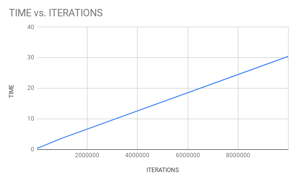
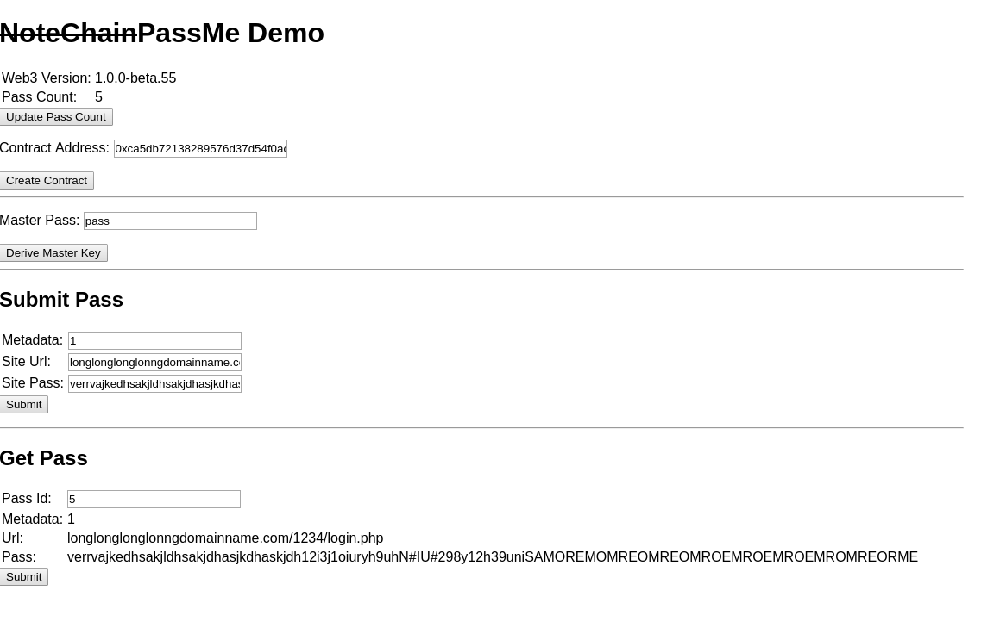

Testing the time taken to hash:
pass: ‘mybadpassword1234’ salt: ‘0x8babfb24596157203d697e4a6cbcf0406fbe122d’ digest: ‘sha512’ iterations: Varying length: 256
Note on measurements: the time value is based on linux’s time, I have averaged the ‘real’ output out of 3 run-throughs (More info on linux time outputs
| Iterations | Time(s) |
|---|---|
| 10^0 | 0.423 |
| 10^1 | 0.408 |
| 10^2 | 0.414 |
| 10^3 | 0.407 |
| 10^4 | 0.444 |
| 10^5 | 0.711 |
| 10^6 | 3.373 |
| 10^7 | 30.457 |
Graphing this data shows that PBKDF2 is a function where the time taken is linearly related to the number of iterations taken

Obviously, 107 passes takes far to long to compute for the derivation function to be user friendly, especially on older hardware (this test was run on an Intel i5-6500 @ 3.20GHz).
Reading over LastPass’s whitepaper, they use 100 passes of a PBKDF2 function with iterations set to 100 (ie, 104).
I’m unsure why the pass over the function 100 times, I averaged the difference between running 104 iterations vs 102 iterations 102 times, and found that the second method took .3 seconds long (although an average of 6 passes is probably inadequate for this kind of comparison).
Note: In my tests I used the sha512 hashing algorithm, whereas the LastPass paper specifies sha256, so perhaps a performance difference would have been noted had I used that algorithm
For the point of safety/convention, I will follow LastPass’s example and iterate over the derivation process (this also snags me a required example of control structure for project completeness), and based on my results, I think I would like to take 105 passes for my project, since this is when I began to notice the difference in time on my PC (although assuming the PBKDF implementation is sound, the time take should linearly increase).
Since I’m already using Node to export the Web3 functionality, I can also export Node’s crypto library, which includes PBKDF2, SHA512 and AES-256-CBC implementations, which I can use in PassMe.
I followed this tutorial to get going on how to use the library, then did some experiments to learn a bit more about how the cipher works/the size of the output.
I found that, as long as the user’s password length <=31 characters (assuming it’s in ASCII, which AFAIK all password forms are), the ciphertext will fit into 32Bytes, which is important as the maximum size of bytes arrays in Solidity is bytes32.
I found this out by playing in an interactive console
var cipher = Crypto.createCipher('aes256','mypassword');
cipher.update('aaaaaaaaaaaaaaaaaaaaaaaaaaaaaaaa','ascii','hex') //32 a's
//outputs: "fe39592ce8f555211aece0d6bfdfb7bcacbe8c20ae6c48bb69a30117d4314023" (this output is already 32B, and would max out the bytes32 object when stored on the blockchain, so we will excluded cipher.final('hex'))
var decipher = Crypto.createDecipher('aes256','mypassword');
decipher.update("fe39592ce8f555211aece0d6bfdfb7bcacbe8c20ae6c48bb69a30117d4314023",'hex','ascii');
//outputs: aaaaaaaaaaaaaaaa (16 a's)
decipher.final('ascii');
//outputs: Error: unable to decrypt data
In this example, because we encrypt 32 characters, it fills all 32B of output ciphertext with the message, without any padding.
For this reason, when we call decipher.final, it cannot determine where the ciphertext should be ending, and errors.
Re-running the above example, but excluding one of the a’s, and appending the output of cipher.final('hex') to the input string of decipher, results in decipher.final returning 15 a’s.
As I’ve been working on my project, I’ve been trying to version my progress; at the moment I’m on version 0.4 (v4)
This is a breakdown of the different versions (preserved in folders in the testing branch):
0.1 — Learning some basics of Chrome extensions
0.2 — More work on chrome extensions
0.3 — Putting web3 into a webpage; this is the first release that actually writes some data to the blockchain
0.4 — Adding encryption to the webpage
…
0.5 — Treat the user’s passwd array as a vault; on load fetch all passwords and decrypt to local array. This will be the first version deployed to a public testnet.
0.6 — Live web version of PassMe
0.7 — Chrome extension
…
1.0 — Deployed on Ethereum mainnet
Accompanying v4, I’ve updated PassMe to version 0.2, significantly changing the Pass datastructure:
bytes12 href ==> string href bytes32 pass ==> string pass
This was necessary due to the large size of hashed passwords; leaving the pass data types as bytes32 woudld’ve hard-capped password length to 15 characters, which isn’t really acceptable.
I changed href to string as well, since I decided for added security I should encrypt the url as well.
These changes impact the gas price, and for longer Pass', the user will have to pay additional gas.
This transaction, for example, cost 0.000545 ETH (approximately $0.25 AUD)

There’s still one final bug in v4 before I move on; for some reason, when I try to read the pass with between 1-2 passwords written, I get an RPC error, however when I write additional passwords I can read these earlier passwords just fine.
I was hoping that I’d be able to set up a publicly accessable testnet, which I could leave the contract deployed on so that it would be easier to get people to test my project, however I can’t seem to expose the network publicly.
I initially tried to expose a geth instance, changing the address that it’s deployed at from localhost => 127.0.0.1, but that didn’t seem to work (I couldn’t get MetaMask to connect)
There’s some documentation about using bootnodes, however I couldn’t get this to work.
This is a little frustrating because it means I’ll need to set up the contract on a testnet + create an account on the net for people in order to get user feedback.
Published: 2019-06-24